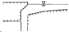
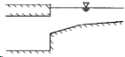
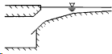

The design parameters for a curb opening inlet are:
Length
The length of the opening (feet or meters).
Height
The height of the opening (feet or meters).
Throat Angle
The orientation of the curb opening's throat relative to the street surface. Choices are:
VERTICAL |
 |
HORIZONTAL |
 |
INCLINED |
 |
 For combination inlets only the portion of the curb opening that extends beyond the length of the grated inlet contributes to inlet capture efficiency.
For combination inlets only the portion of the curb opening that extends beyond the length of the grated inlet contributes to inlet capture efficiency.